A Soft Introduction to Machine Learning
Important machine learning libraries
I created this document to serve as an easy introduction to basic machine learning methods. It is aimed at individuals who have some basic understanding of R and a basic understanding of mathematics.
To run through this course Yourself you will need to clone the repository:
https://github.com/lurd4862/Machine_learning_course_work.git
You will also need these packages installed:
- tidyr
- caTools
- ggplot2
- purrr
- dplyr
- data.table
- cluster
- e1071
- rpart
- caret
- xgboost
Future additions
- Will add more on:
- Thompson Sampling
- Natural language processing
- Deep learning
Part 1 - Data Preprocessing
Summary of things to do when processing the data for machine learning purposes: - Import data - Deal with NA’s - Encode categorical/text variables into numbers - Split into test and train - Apply feature scaling
For part 1 I will import some data first
#Import the data from 'data.csv'
dataset <-
read.csv("../../static/data/intro_ml/Part_1/7_Data.csv", header = TRUE)
#method for dealing with NA using mean values
dataset$Age <- ifelse(is.na(dataset$Age),mean(dataset$Age,na.rm = T),dataset$Age)
dataset$Salary <- ifelse(is.na(dataset$Salary),mean(dataset$Salary,na.rm = T),dataset$Age)
X <-
dataset[,-4]
Y <-
dataset[, 4]
#Encode the categorical variables into numbers
#Purchased variable
dataset$Purchased <- ifelse(dataset$Purchased == "Yes", 1, 0)
dataset$Country <- dataset$Country %>% factor(levels = c("France", "Spain", "Germany"),
labels = c(1, 2, 3))
# #If we want to further spread the Country into clasification (as with logistic regression) I would use this:
# dataset %>%
# spread(Country, Country) %>%
# rename(France = 1, Spain = 2, Germany = 3)Splitting the dataset into a training and test set
#We use caTools
set.seed(123)
split <-
sample.split(dataset$Purchased, SplitRatio = 0.8)
training_set <- subset(dataset, split == T)
test_set <- subset(dataset, split == F)
##Or the shorter way
# Train <- dataset[split,]
# Test <- dataset[!split,]Feature scaling
Why feature scale? Because the different features (variables of the training data) are not on the same scale and because machine leaarning models use methods such as euclidean distance squaring of parameters may make some more significant than others which we do not want.
- Avoid squared interactions overpowering small bias/observations
How do we feature scale? - Standardisation [x_stand <- (x-mean(x))/std(x)] - Normalisation [x_norm <- (x-min(x))/(max(x)-min(x))]
Scale our features for the data
Using built in tools:
training_set[,2:3] <- scale(training_set[,2:3] )
test_set[,2:3] <- scale(test_set[,2:3] )Here is how I decided to achieve scaling before seeing the results: - My application of applying the mentioned formulas for normalisation and standardisation does not = the scale methods results implying that the scale method is somehow optimised - Upon reading the help-text for scale it appears to centre and use a root-mean-squared error instead of a simple standard deviation when standardizing.
Manually Scale Age
# #Standardised
# dataset$Age <-
# sapply(dataset$Age, function(x) (x-mean(dataset$Age))/sd(dataset$Age))
#
# #Normalised
# dataset$Age <-
# sapply(dataset$Age, function(x) (x-min(dataset$Age))/(max(dataset$Age)-min(dataset$Age)))Manually Scale Salary
#
# #Standardised
# dataset$Salary <-
# sapply(dataset$Salary, function(x) (x-mean(dataset$Salary))/sd(dataset$Salary))
#
# #Normalised
# dataset$Salary <-
# sapply(dataset$Salary, function(x) (x-min(dataset$Salary))/(max(dataset$Salary)-min(dataset$Salary)))Part 2 - Regression
set.seed(123)Simple Linear Regression
First we fit a linear model to the data
dataset <-
read.csv(file = "../../static/data/intro_ml/Part2_Regression/Simple_Linear_Regression/Salary_Data.csv")
dataset %>% tbl_df()## # A tibble: 30 x 2
## YearsExperience Salary
## <dbl> <dbl>
## 1 1.10 39343
## 2 1.30 46205
## 3 1.50 37731
## 4 2.00 43525
## 5 2.20 39891
## 6 2.90 56642
## 7 3.00 60150
## 8 3.20 54445
## 9 3.20 64445
## 10 3.70 57189
## # ... with 20 more rowssplit <-
sample.split(dataset$Salary, SplitRatio = 2/3)
training_set <-
dataset[split,]
test_set <-
dataset[!split,]
regressor <-
lm(formula = Salary~., training_set)Notice that we always test using the smaller split of the data
Now we Predict our values using the test data
y_pred <-
predict(regressor, newdata = test_set) %>%
data.frame
#Plot the predictions over the test
ggplot() +
geom_point(data = test_set, aes(x = test_set$YearsExperience,
y = test_set$Salary)) +
geom_line(data = y_pred, aes(x = test_set$YearsExperience,
y = y_pred$.))+
stat_smooth()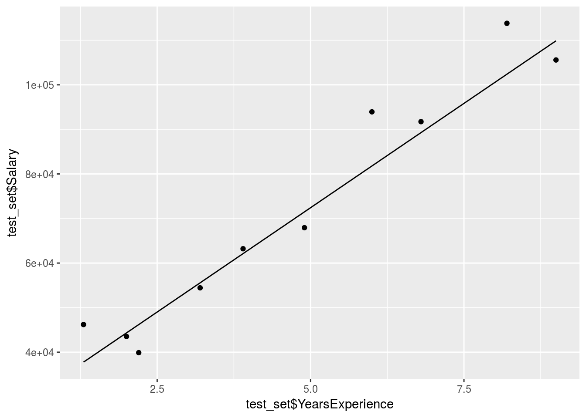
The prediction is obviously pretty good since the data was mostly linear already.
Multiple linear regression
Read in the data:
dataset <-
read.csv("../../static/data/intro_ml/Part2_Regression/Multiple-Linear-Regression/Multiple_Linear_Regression/50_Startups.csv")
dataset %>% tbl_df()## # A tibble: 50 x 5
## R.D.Spend Administration Marketing.Spend State Profit
## <dbl> <dbl> <dbl> <fct> <dbl>
## 1 165349 136898 471784 New York 192262
## 2 162598 151378 443899 California 191792
## 3 153442 101146 407935 Florida 191050
## 4 144372 118672 383200 New York 182902
## 5 142107 91392 366168 Florida 166188
## 6 131877 99815 362861 New York 156991
## 7 134615 147199 127717 California 156123
## 8 130298 145530 323877 Florida 155753
## 9 120543 148719 311613 New York 152212
## 10 123335 108679 304982 California 149760
## # ... with 40 more rowspre-process the data
dataset$State <- dataset$State %>% forcats::as_factor(levels = c("New York", "California", "Florida"),
labels = c(1, 2, 3))Split the data:
split <-
sample.split(dataset$Profit, SplitRatio = 8/10)
training_set <-
dataset[split,]
test_set <-
dataset[!split,]Run the multiple linear regression model and compare the results
regressor <-
lm(formula = Profit~., training_set)
summary(regressor)##
## Call:
## lm(formula = Profit ~ ., data = training_set)
##
## Residuals:
## Min 1Q Median 3Q Max
## -32392 -3950 -106 5102 19622
##
## Coefficients:
## Estimate Std. Error t value Pr(>|t|)
## (Intercept) 5.055e+04 8.802e+03 5.744 1.85e-06 ***
## R.D.Spend 8.223e-01 5.412e-02 15.194 < 2e-16 ***
## Administration -3.815e-02 6.814e-02 -0.560 0.579
## Marketing.Spend 2.176e-02 2.092e-02 1.040 0.306
## StateFlorida 5.770e+01 4.013e+03 0.014 0.989
## StateNew York -1.377e+03 3.780e+03 -0.364 0.718
## ---
## Signif. codes: 0 '***' 0.001 '**' 0.01 '*' 0.05 '.' 0.1 ' ' 1
##
## Residual standard error: 9753 on 34 degrees of freedom
## Multiple R-squared: 0.9451, Adjusted R-squared: 0.9371
## F-statistic: 117.2 on 5 and 34 DF, p-value: < 2.2e-16Profit_pred <-
predict(regressor, test_set)
Compare_df <-
cbind(test_set, Profit_pred)
Compare_df %>% mutate(Accuracy = abs(Profit_pred-Profit)/Profit)## R.D.Spend Administration Marketing.Spend State Profit
## 1 165349.20 136897.80 471784.1 New York 192261.83
## 2 162597.70 151377.59 443898.5 California 191792.06
## 3 144372.41 118671.85 383199.6 New York 182901.99
## 4 86419.70 153514.11 0.0 New York 122776.86
## 5 73994.56 122782.75 303319.3 Florida 110352.25
## 6 66051.52 182645.56 118148.2 Florida 103282.38
## 7 46426.07 157693.92 210797.7 California 96712.80
## 8 28663.76 127056.21 201126.8 Florida 90708.19
## 9 44069.95 51283.14 197029.4 California 89949.14
## 10 20229.59 65947.93 185265.1 New York 81229.06
## Profit_pred Accuracy
## 1 190190.15 0.010775293
## 2 188145.49 0.019013156
## 3 171708.30 0.061200461
## 4 114385.46 0.068346784
## 5 113374.25 0.027385052
## 6 100529.86 0.026650416
## 7 87301.17 0.097315271
## 8 73710.80 0.187385350
## 9 89123.92 0.009174326
## 10 67326.62 0.171151123We can tell already that R & D spend is our most important variable, but does this mean no other variable is useful?
Now proceed with backward elimination
p_value <- 0.05
#Remove the State variable
regressor <-
lm(formula = Profit ~ R.D.Spend + Administration + Marketing.Spend, dataset)
summary(regressor)##
## Call:
## lm(formula = Profit ~ R.D.Spend + Administration + Marketing.Spend,
## data = dataset)
##
## Residuals:
## Min 1Q Median 3Q Max
## -33534 -4795 63 6606 17275
##
## Coefficients:
## Estimate Std. Error t value Pr(>|t|)
## (Intercept) 5.012e+04 6.572e+03 7.626 1.06e-09 ***
## R.D.Spend 8.057e-01 4.515e-02 17.846 < 2e-16 ***
## Administration -2.682e-02 5.103e-02 -0.526 0.602
## Marketing.Spend 2.723e-02 1.645e-02 1.655 0.105
## ---
## Signif. codes: 0 '***' 0.001 '**' 0.01 '*' 0.05 '.' 0.1 ' ' 1
##
## Residual standard error: 9232 on 46 degrees of freedom
## Multiple R-squared: 0.9507, Adjusted R-squared: 0.9475
## F-statistic: 296 on 3 and 46 DF, p-value: < 2.2e-16#Remove the Administration variable
regressor <-
lm(formula = Profit ~ R.D.Spend + Marketing.Spend, dataset)
summary(regressor)##
## Call:
## lm(formula = Profit ~ R.D.Spend + Marketing.Spend, data = dataset)
##
## Residuals:
## Min 1Q Median 3Q Max
## -33645 -4632 -414 6484 17097
##
## Coefficients:
## Estimate Std. Error t value Pr(>|t|)
## (Intercept) 4.698e+04 2.690e+03 17.464 <2e-16 ***
## R.D.Spend 7.966e-01 4.135e-02 19.266 <2e-16 ***
## Marketing.Spend 2.991e-02 1.552e-02 1.927 0.06 .
## ---
## Signif. codes: 0 '***' 0.001 '**' 0.01 '*' 0.05 '.' 0.1 ' ' 1
##
## Residual standard error: 9161 on 47 degrees of freedom
## Multiple R-squared: 0.9505, Adjusted R-squared: 0.9483
## F-statistic: 450.8 on 2 and 47 DF, p-value: < 2.2e-16#Remove the State & Marketing spend variable
regressor <-
lm(formula = Profit ~ R.D.Spend + Administration, dataset)
summary(regressor)##
## Call:
## lm(formula = Profit ~ R.D.Spend + Administration, data = dataset)
##
## Residuals:
## Min 1Q Median 3Q Max
## -34006 -4801 -303 6034 17843
##
## Coefficients:
## Estimate Std. Error t value Pr(>|t|)
## (Intercept) 5.489e+04 6.017e+03 9.122 5.7e-12 ***
## R.D.Spend 8.621e-01 3.016e-02 28.589 < 2e-16 ***
## Administration -5.300e-02 4.940e-02 -1.073 0.289
## ---
## Signif. codes: 0 '***' 0.001 '**' 0.01 '*' 0.05 '.' 0.1 ' ' 1
##
## Residual standard error: 9402 on 47 degrees of freedom
## Multiple R-squared: 0.9478, Adjusted R-squared: 0.9456
## F-statistic: 426.8 on 2 and 47 DF, p-value: < 2.2e-16After trying different combinations of variables we can see that the marketing spend is also an important variable but some of its effect is already captured by other variables.
Polynomial Regression
Read in the data
dataset <-
read.csv("../../static/data/intro_ml/Part3_Polynomial_Regression/Polynomial_Regression/Position_Salaries.csv")
dataset %>% tbl_df()## # A tibble: 10 x 3
## Position Level Salary
## <fct> <int> <int>
## 1 Business Analyst 1 45000
## 2 Junior Consultant 2 50000
## 3 Senior Consultant 3 60000
## 4 Manager 4 80000
## 5 Country Manager 5 110000
## 6 Region Manager 6 150000
## 7 Partner 7 200000
## 8 Senior Partner 8 300000
## 9 C-level 9 500000
## 10 CEO 10 1000000Create a linear regression model to compare (data is exponential)
regressor <- lm(formula = Salary~Level, dataset)
Linear_regressor <-
predict(regressor, dataset) %>% data.frame()
ggplot() +
geom_point(data = dataset, aes(x = dataset$Level,
y = dataset$Salary)) +
geom_line(data = dataset, aes(x = dataset$Level,
y = Linear_regressor$.))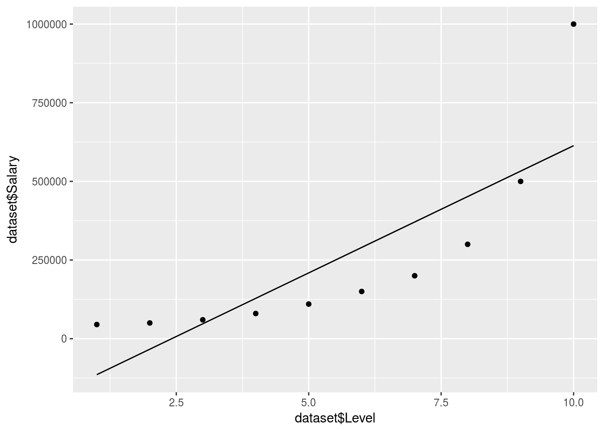
Value_Prediction <-
predict(regressor, data.frame(Level = 6.5))We can tell that a linear model won’t do here, no QQ plot needed. So if we were to predict the salary between level 6 and 7 our estimate would be off:
Value_Prediction## 1
## 330378.8Now we create the polynomial regressor…
Specifying every variable is actually very rigid and arduous so I used the poly function which enables a more accurate and also easier polynomial regression (pretty awesome function, uses orthogonal vectors)
Poly_Regressor <-
lm(formula = Salary~poly(Level,9), dataset)
Poly_predict <-
predict(Poly_Regressor, dataset) %>% data.frame()
ggplot() +
geom_point(data = dataset, aes(x = dataset$Level,
y = dataset$Salary)) +
geom_line(data = y_pred, aes(x = dataset$Level,
y = Poly_predict$.))
Value_Prediction <-
predict(Poly_Regressor, data.frame(Level = 6.5))
Value_Prediction## 1
## 172235.3This fits pretty well…
But what about a log transform model?
Log_Regressor <-
lm(formula = log(Salary)~Level, dataset)
Log_prediction <-
exp(predict(Log_Regressor, dataset)) %>% data.frame()
ggplot() +
geom_point(data = dataset, aes(x = dataset$Level,
y = dataset$Salary)) +
geom_line(data = y_pred, aes(x = dataset$Level,
y = Log_prediction$.))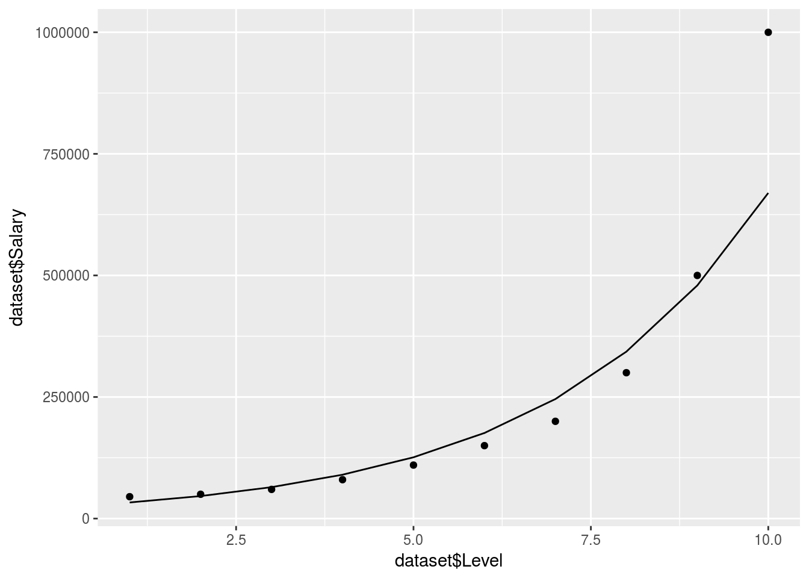
# TruthOrBluff <-
# Log_prediction[which(Log_prediction$. <= 160000),1]Actualy the idea of a log regression is probably not a bad method if you require a smooth line without a high order polynomial which could increase R-Squared?.
Support vector machine regression
SVR is very straight forward to implement. We call the svm() function from the e1071 package similar to lm(). The function will automatically use classification algorythms if we are regressing a factor variable in the formula. It is still a good idea to specify the method outright.
Use the following main types:
- type = C-classification for classification
- type = eps-regression for regression of numeric variables.
Remember to do the usual data preparation; tokenize factors, scale variables. This will give you the best predictions.
Load the data
data <- read.csv(file = "../../static/data/intro_ml/Part2_Regression/SVR/SVR/Position_Salaries.csv")
head(data)## Position Level Salary
## 1 Business Analyst 1 45000
## 2 Junior Consultant 2 50000
## 3 Senior Consultant 3 60000
## 4 Manager 4 80000
## 5 Country Manager 5 110000
## 6 Region Manager 6 150000Create SVR regressor and prediction
regressor <- svm(formula = Salary ~ .,data = data, type = "eps-regression")
y_pred <- predict(regressor, data) %>% data.frame()Plot the regression
# Value_Prediction <-
# predict(regressor, data.frame(Level = 6.5, Position = modelr::typical(data$Position)))
ggplot() +
geom_point(data = data, aes(x = data$Level,
y = data$Salary)) +
geom_line(data = y_pred, aes(x = data$Level,
y = y_pred))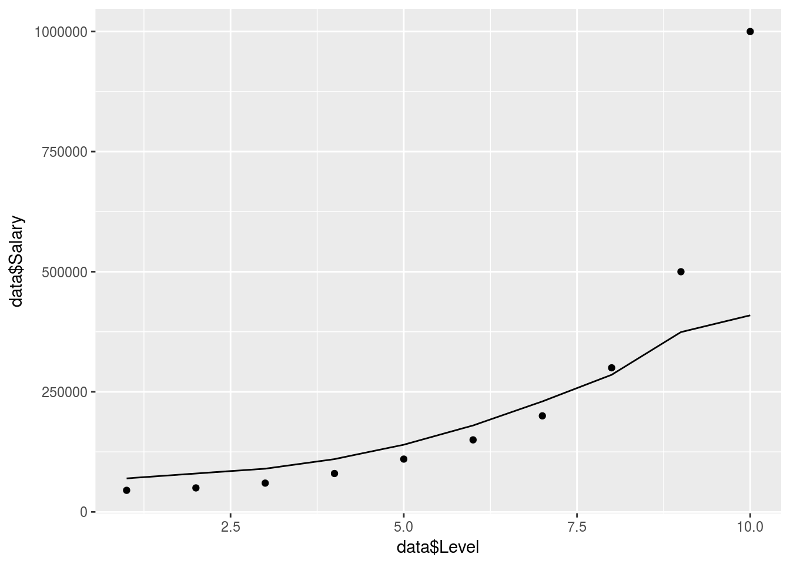
# geom_point(data = y_pred, aes(x = 6.5,
# y = Value_Prediction))Not bad but seems to struggle with the exponential tail here, needs more data to be accurate.
Regression Trees
Intuition
CART stands for classification and regression trees.
There are, thereforem, 2 types of trees (as usual).
Watch the intuition video here: https://www.udemy.com/machinelearning/learn/v4/t/lecture/5732730?start=0
Regression trees are based on information entropy. Entropy is a measure of uncertainty or the value of an additional data point in terms of information.
Entropy is defined as \(E(-ln(P(X)))\). It is often taken with base 2 in which case it is defined as bit entropy. Base 2 is computationally more efficient and often better leverages in binary outcomes. In the case of a bernouli process the entropy would be: \(\sum -P(x_i)ln(P(x_i)) = \sum -1/2ln(1/2)\). The entropy is maximised when the odds are 1/2 because then we are the least certain
The algorythm will devide the data into branches where the entropy is above a certain threshold. Once it has created enough branches it will make the regression prediction based on the average of the predictions of each branch depending on which branch the values lie for which you are predicting.
Load the data
dataset <-
read.csv(file = "../../static/data/intro_ml/Part2_Regression/Decision_Tree_Regression/Decision_Tree_Regression/Position_Salaries.csv")Run the regression
regressor <- rpart(formula = Salary ~ ., data = dataset)
y_predict <- predict(regressor, newdata = dataset) %>% data.frame
regressor %>% summary## Call:
## rpart(formula = Salary ~ ., data = dataset)
## n= 10
##
## CP nsplit rel error xerror xstd
## 1 0.01 0 1 0 0
##
## Node number 1: 10 observations
## mean=249500, MSE=8.066225e+10Plot results
ggplot() +
geom_point(data = dataset, aes(x = dataset$Level,
y = dataset$Salary)) +
geom_line(data = y_predict, aes(x = dataset$Level,
y = y_predict))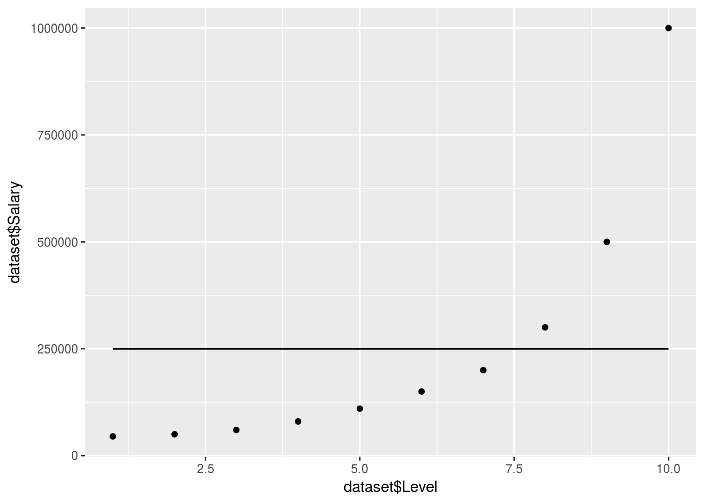
What happened!
There are no clear decision trees formed so the model just took an average in 1 branch.
Let’s create more branches:
regressor <- rpart(formula = Salary ~ ., data = dataset, control = rpart.control(minsplit = 1))
y_predict <- predict(regressor, newdata = dataset) %>% data.frame
ggplot() +
geom_point(data = dataset, aes(x = dataset$Level,
y = dataset$Salary)) +
geom_line(data = y_predict, aes(x = dataset$Level,
y = y_predict))
In reality the decision tree is actually just giving an average for each branch. So it doesn’t produce a smooth graph. It will return an average based on which branch/decision segment your independant predictor variables lie.
Random forest regression
Random forest is one method of ensemble learning. Generally speaking ensemble learning is fitting a model repeatedly and colating the results to create a more powerful and robust model.
Random forest intuition:
Pick n random points from the training set.
Build a decision tree on these n points.
Combine the trees to build a forest by predicting Y in each terminal mode and taking the average (either by counting out of total or predicting a probability in each tree and taking the mean).
Load data
salary_data <- data.table::fread("../../static/data/intro_ml/Part2_Regression/Random_Forest_Regression/Position_Salaries.csv")
head(salary_data)## Position Level Salary
## 1: Business Analyst 1 45000
## 2: Junior Consultant 2 50000
## 3: Senior Consultant 3 60000
## 4: Manager 4 80000
## 5: Country Manager 5 110000
## 6: Region Manager 6 150000This is again the salary data
Fit model
library(randomForest)## randomForest 4.6-12## Type rfNews() to see new features/changes/bug fixes.##
## Attaching package: 'randomForest'## The following object is masked from 'package:dplyr':
##
## combine## The following object is masked from 'package:ggplot2':
##
## marginpredictor <-
randomForest::randomForest(data = salary_data,Salary~Level,ntree=10)and now we predict an arbitrary value:
y_predict <- predict(predictor, data.frame(Level = 6.5))Let’s plot this 2d relationship to understand the naive model:
x_range <- seq(min(salary_data$Level),max(salary_data$Level),0.01)
ggplot(data = salary_data, aes(x = Level,y = Salary), color = "red")+
geom_point()+
geom_smooth()+
geom_line(data = data.frame(Level = x_range),aes(x=x_range,y=predict(predictor,newdata=data.frame(Level = Level))), color = "blue")## `geom_smooth()` using method = 'loess'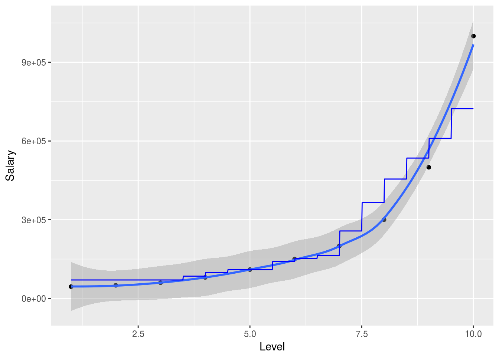
So in this simplified example we can nicely show how the random forest will attempt to predict the outcome variable in 2 dimensions. Obviously the model is much more powerful when working with larger and higher dimensional data. The randomForest package is particularly useful when explanetory variables are binary classes or multiple level factor variables since it has internal ways to dummify these cases and deal with them.
Pay particular attention to over fitting your data (test out of sample accuracy) and also to class imbalances when your variables are intricate.
A more robust application of machine learning regressions (random forest)
With real data the machine learning model will have to be trained and tested using a bit more rigor. In that case I suggest that the practitioner use the caret workflow.
Using the Iris dataset we illustrate:
classification_data = iris
cvCtrl = caret::trainControl(method = "LGOCV",
p = 0.8,
number = 10,
savePredictions = T)
caret_forest_model <-
caret::train(data = classification_data, Species~., method = "rf", keep.forest=TRUE, trControl = cvCtrl
# , sampsize=10000,ntree=40
)
caret_forest_model %>% plot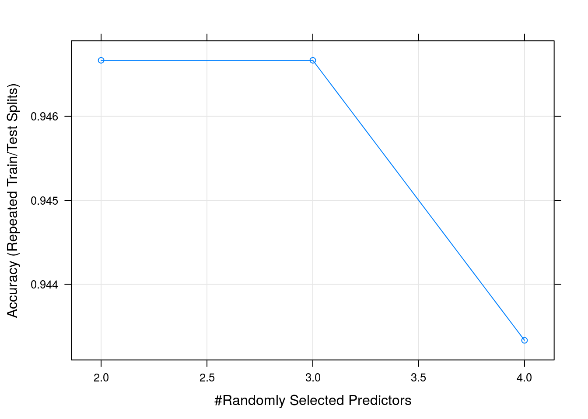
varImp(caret_forest_model) %>% plot
caret_forest_model$results## mtry Accuracy Kappa AccuracySD KappaSD
## 1 2 0.9466667 0.920 0.04766136 0.07149204
## 2 3 0.9466667 0.920 0.04766136 0.07149204
## 3 4 0.9433333 0.915 0.04458312 0.06687468So we got a 93% accuracy when classifying the species using 10 fold leave one out cross validation using a 80% traning split
We can clearly see from the accuracy graph that we did not have enough data to improve our model by using more complicated predictors in our trees
In this short pipeline you can split your data into training and testing , k-fold cross validate, using up or down sampling methods to deal with class imbalances, run on multiple cores and tune your parameters automatically or manually for a very large number of models git The tuning of parameters can be done manually by setting:
grid <- expand.grid(size=c(5,10,20,50), k=c(1,2,3,4,5))
model <- train(Species~., data=iris, method="lvq", trControl=control, tuneGrid=grid)To run on multiple cores use the following workflow before training the model:
cores <- cores
cl <- makeCluster(cores)
registerDoParallel(cl)
# ---> train
stopCluster(cl)Part 3 - Clustering
K-means
Load the data
dataset <-
data.table::fread("../../static/data/intro_ml/Part_4_Clustering/K_Means/K_Means/Mall_Customers.csv")
# read.csv(file = "Part_4_Clustering/K_Means/K_Means/Mall_Customers.csv")
head(dataset)## CustomerID Genre Age Annual Income (k$) Spending Score (1-100)
## 1: 1 Male 19 15 39
## 2: 2 Male 21 15 81
## 3: 3 Female 20 16 6
## 4: 4 Female 23 16 77
## 5: 5 Female 31 17 40
## 6: 6 Female 22 17 76Find best number of clusters using elbow method. Generally there is a threshold were creating more groups will not be meaningful.
subset <-
dataset %>% select(`Annual Income (k$)`, `Spending Score (1-100)`)
wcss <- vector()
for(i in 1:50){
wcss[i] <- sum(kmeans(subset,i)$withinss)
}
wcss %>% plot
looks like ~5 clusters will give us a meaningfull number of clusters
Create the clusters
On variables income, spend and score:
cluster_1 <- kmeans(dataset %>% select(4:5), 5, iter.max = 1000, nstart = 10)Plot the clusters
clusplot(
dataset %>% select(4:5),
cluster_1$cluster,
lines = 0,
shade = FALSE,
color = TRUE,
labels = 1,
plotchar = FALSE,
span = TRUE
# main = "main title",
# xlab = "x title",
# ylab = "y title"
)
Apparently the k-means algorythm thinks these 2 columns describe all the variability. So a regression with only these factors should produce a good R^2
Let’s try adding some more columns and see how the clustering algorithm behaves:
To include all the other variables we will have to tokenize the Genre column into a true/false 1/0 so that the algorythm can calculate euclidean distance, one might also want to normalize the variables
subset_2 <-
dataset %>%
select(Genre:`Spending Score (1-100)`) %>%
mutate(Genre = factor(Genre, labels = c(0,1),levels = c("Female","Male")))
# mutate(Genre = factor(Genre, levels = c(0,1),labels = c("Female","Male")))
wcss_2 <- vector()
for(i in 1:50){
wcss_2[i] <- sum(kmeans(subset_2,i)$withinss)
}
wcss_2 %>% plot
# Quicly look at points and gradients/skewness
wcss_2 %>%
tbl_df() %>%
arrange(-value) %>%
mutate(clusters = seq_along(value),
gradient = lag(value)-value,
gradient_rate_change = lag(gradient)-gradient) %>%
mutate_all(round)## # A tibble: 50 x 4
## value clusters gradient gradient_rate_change
## <dbl> <dbl> <dbl> <dbl>
## 1 308862 1.00 NA NA
## 2 219909 2.00 88953 NA
## 3 157201 3.00 62708 26245
## 4 104415 4.00 52786 9922
## 5 82657 5.00 21758 31028
## 6 58349 6.00 24308 - 2551
## 7 53238 7.00 5111 19197
## 8 51131 8.00 2107 3004
## 9 45110 9.00 6021 - 3914
## 10 43507 10.0 1603 4418
## # ... with 40 more rows# Using the 2nd derivitive as an aproximation we use 7 clusters as the optimal number
cluster_2 <- kmeans(subset_2, 7, iter.max = 1000, nstart = 10)When we look at the kmeans output it has clearly used all the new columns. But the clusplot function can only plot 2 variables so we dont plot anything here.
Hierarchical clustering
There are broad approaches to H-clustering:
- Agglomerative
- Divisive
Agglomerative starts from the bottom and builds everything up (using a dendogram), and Divisive is the opposite.
HC uses distance between clusters.
This can be defined in different ways since a cluster is a group of points!
Steps:
1. Make a cluster for each point
2. Make n-1 clusters by grouping together the closest clusters
3. repeat step 2 untill you have 1 cluster left
Dendograms Agglomerative
A dendogram is a plot of distances for each cluster from another showing how clusters where connected given their distances
For Agglomerative the dendogram will build larger clusters from smaller clusters like building a tower.
Choosing the number of clusters using the dendogram
By looking at the dendogram we can determine the number of clusters we want to use by identifying some threshold on vertical distance that we do not want to cross.
Here vertical distance refers to the distance between the clusters being joined on the current iteration
Rule of thumb: make the threshold somewhere in the height of the cluster with the largest vertical distance. Repeat this process untill the next vertical distance is not significantly larger than the previous
Read in the data
dataset <-
fread("../../static/data/intro_ml/Part_4_Clustering/Hierarchical-Clustering/Hierarchical_Clustering/Mall_Customers.csv")
head(dataset)## CustomerID Genre Age Annual Income (k$) Spending Score (1-100)
## 1: 1 Male 19 15 39
## 2: 2 Male 21 15 81
## 3: 3 Female 20 16 6
## 4: 4 Female 23 16 77
## 5: 5 Female 31 17 40
## 6: 6 Female 22 17 76subset <-
dataset %>% select(`Annual Income (k$)`,`Spending Score (1-100)`)Plot dendogram
method = "ward.D" will minimise each cluster’s within_variance
HC <- hclust(d = dist(subset, method = "euclidean") ,
method = "ward.D")
HC %>% plot
# HC %>% plot(ylim=c(0, 200) )We can clearly see from this dendogram that the threshold will be pretty low to achieve a reasonable number of groups
Choose number of clusters:
We now cut the dendogram tree and choos our number of clusters
HC_clusters <-
HC %>% cutree(k = 5) # 5 clustersPlot the HC results
clusplot(
subset,
HC_clusters,
lines = 0,
shade = FALSE,
color = TRUE,
labels = 1,
plotchar = FALSE,
span = TRUE,
main = "main title",
xlab = "x title",
ylab = "y title"
)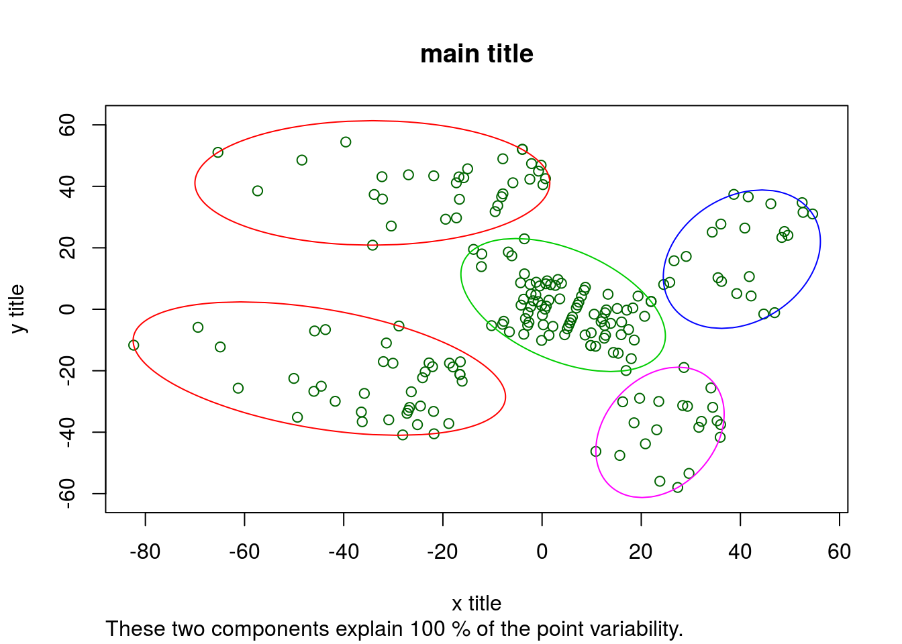
Part 4 - Dimensionality Reduction
Load data
dataset <-
read.csv(file = "../../static/data/intro_ml/Part_9_Dimensionality_Reduction/PCA/Wine.csv")
dataset %>% head## Alcohol Malic_Acid Ash Ash_Alcanity Magnesium Total_Phenols Flavanoids
## 1 14.23 1.71 2.43 15.6 127 2.80 3.06
## 2 13.20 1.78 2.14 11.2 100 2.65 2.76
## 3 13.16 2.36 2.67 18.6 101 2.80 3.24
## 4 14.37 1.95 2.50 16.8 113 3.85 3.49
## 5 13.24 2.59 2.87 21.0 118 2.80 2.69
## 6 14.20 1.76 2.45 15.2 112 3.27 3.39
## Nonflavanoid_Phenols Proanthocyanins Color_Intensity Hue OD280 Proline
## 1 0.28 2.29 5.64 1.04 3.92 1065
## 2 0.26 1.28 4.38 1.05 3.40 1050
## 3 0.30 2.81 5.68 1.03 3.17 1185
## 4 0.24 2.18 7.80 0.86 3.45 1480
## 5 0.39 1.82 4.32 1.04 2.93 735
## 6 0.34 1.97 6.75 1.05 2.85 1450
## Customer_Segment
## 1 1
## 2 1
## 3 1
## 4 1
## 5 1
## 6 1We will try out some dimensionality reduction techniques on wine data.
Overview
There are 2 ways of reducing the dimensions of your dataset before fitting a model:
1. Feature selection. Like backward or forward elimination we did during Part 2 regression or using scores. This aims at removing features that are not significant in improving prediction in our dependant variable.
2. Feature extraction. This aims at combining features into fewer variables (dimensions). This is the focus of this chapter.
PCA
Assume customer segment is the result of clustering customers on the independant variables… Using this data we could fit a classification model to better predict which customer segment will like a new wine that has certain values for these variables.
But in order to plot the link between the independant variables and the segment classification we would have to visualize too many variables.
Also, to inspect this using a table is very difficult when you have many variables. Instead we use PCA to reduce the number of dimensions to 2 independant variables so that we can more easily tell a story of how customers are segmented (describe relationships that add customer insight).
Split into test and train sets
set.seed(123)
split <- sample.split(dataset$Customer_Segment, SplitRatio = 0.8)
training_set <- dataset %>% subset(split)
test_set <- dataset %>% subset(!split)Feature scaling
training_set[,1:13] <- scale(training_set[,1:13])
test_set[,1:13] <- scale(test_set[,1:13])Create PCA
There are 2 popular packages for dimensionality reduction and they are: - Caret
- Factominer
Factominer has some really neat and cool functions for data mining and visualization.
On the other hand caret fits really well into a machine learning model workflow.
Using Caret
If you want to reduce the dimensionality while explaining at least a certain threshold of variation in y you can set this threshold as:
- thresh = 0.7
If however you know how many features you want to extract use:
- pcaComp = n (this will overwrite thresh)
pca_caret <-
preProcess(x = training_set[, -14],
method = "pca",
pcaComp = 2)
prediction_caret <-
pca_caret %>% predict(newdata = test_set[, -14])
PCA_caret <- prediction_caret %>% cbind(test_set[,14])
prediction_caret %>% plot()
This plot is pretty plain looking and its hard to tell a story from just this… So if you need to explain what your dimensions are made up off this is not the way to go.
Using FactoMineR
To set number of features here you use
- ncp = n
pca_Facto <-
FactoMineR::PCA(X = training_set[,-14],
ncp = 2)

predict_Facto <-
pca_Facto %>% predict(newdata = test_set[,-14])
pca_Facto %>% plot
PCA_factominer <- predict_Facto$coord %>% data.frame() %>% cbind(test_set[,14])
PCA_factominer %>% head## Dim.1 Dim.2 test_set[, 14]
## 4 3.494230 2.7730715 1
## 5 1.040112 0.9872953 1
## 8 1.993220 1.5575554 1
## 11 3.341683 1.2490538 1
## 16 2.244393 1.6405095 1
## 20 2.119558 1.0043728 1pca_Facto %>% summary()##
## Call:
## FactoMineR::PCA(X = training_set[, -14], ncp = 2)
##
##
## Eigenvalues
## Dim.1 Dim.2 Dim.3 Dim.4 Dim.5 Dim.6
## Variance 4.673 2.399 1.537 0.959 0.834 0.676
## % of var. 35.947 18.451 11.823 7.373 6.419 5.203
## Cumulative % of var. 35.947 54.398 66.221 73.594 80.013 85.216
## Dim.7 Dim.8 Dim.9 Dim.10 Dim.11 Dim.12
## Variance 0.564 0.363 0.298 0.229 0.216 0.144
## % of var. 4.337 2.796 2.296 1.758 1.660 1.106
## Cumulative % of var. 89.553 92.349 94.645 96.404 98.064 99.170
## Dim.13
## Variance 0.108
## % of var. 0.830
## Cumulative % of var. 100.000
##
## Individuals (the 10 first)
## Dist Dim.1 ctr cos2 Dim.2 ctr
## 1 | 3.998 | 3.261 1.603 0.665 | 1.572 0.725
## 2 | 3.315 | 2.174 0.712 0.430 | -0.320 0.030
## 3 | 3.348 | 2.510 0.949 0.562 | 1.240 0.451
## 6 | 3.988 | 2.951 1.313 0.548 | 2.308 1.564
## 7 | 3.402 | 2.402 0.869 0.498 | 1.327 0.517
## 9 | 3.509 | 2.427 0.888 0.479 | 1.040 0.318
## 10 | 3.286 | 2.684 1.085 0.667 | 0.908 0.242
## 12 | 2.874 | 1.724 0.448 0.360 | 0.690 0.140
## 13 | 2.924 | 2.080 0.652 0.506 | 0.820 0.197
## 14 | 4.846 | 3.366 1.707 0.482 | 1.429 0.600
## cos2
## 1 0.155 |
## 2 0.009 |
## 3 0.137 |
## 6 0.335 |
## 7 0.152 |
## 9 0.088 |
## 10 0.076 |
## 12 0.058 |
## 13 0.079 |
## 14 0.087 |
##
## Variables (the 10 first)
## Dim.1 ctr cos2 Dim.2 ctr cos2
## Alcohol | 0.264 1.489 0.070 | 0.762 24.176 0.580 |
## Malic_Acid | -0.509 5.542 0.259 | 0.312 4.056 0.097 |
## Ash | 0.009 0.002 0.000 | 0.519 11.243 0.270 |
## Ash_Alcanity | -0.494 5.215 0.244 | 0.010 0.004 0.000 |
## Magnesium | 0.294 1.852 0.087 | 0.424 7.500 0.180 |
## Total_Phenols | 0.842 15.153 0.708 | 0.153 0.972 0.023 |
## Flavanoids | 0.908 17.627 0.824 | 0.038 0.061 0.001 |
## Nonflavanoid_Phenols | -0.650 9.048 0.423 | 0.118 0.582 0.014 |
## Proanthocyanins | 0.674 9.729 0.455 | 0.121 0.609 0.015 |
## Color_Intensity | -0.282 1.704 0.080 | 0.815 27.710 0.665 |Wow! That’s great, we can clearly see how our dimensions are created. Once we have fit a model and predict something like say a wine rating we will be able to make some conjectures of which variables tend to give us good scores.
In this case we already have segments and we can now figure out how these segments were created in the first place.
Fit classification model
We can quicly fit a classification model to the feature scaled data. For simplicity we use basic classification models.
First we test using the full scaled dataset:
Classifier_glm <-
glm(data = test_set,
formula = Customer_Segment ~ .)
Classifier_glm##
## Call: glm(formula = Customer_Segment ~ ., data = test_set)
##
## Coefficients:
## (Intercept) Alcohol Malic_Acid
## 1.94444 -0.01752 0.07639
## Ash Ash_Alcanity Magnesium
## -0.14726 0.08934 -0.06844
## Total_Phenols Flavanoids Nonflavanoid_Phenols
## -0.03352 -0.26106 -0.05597
## Proanthocyanins Color_Intensity Hue
## -0.04627 0.16147 -0.06577
## OD280 Proline
## -0.22850 -0.19197
##
## Degrees of Freedom: 35 Total (i.e. Null); 22 Residual
## Null Deviance: 21.89
## Residual Deviance: 0.5739 AIC: -16.84confusion_matrix <- table(test_set$Customer_Segment, Classifier_glm %>% predict %>% round)
confusion_matrix##
## 1 2 3
## 1 12 0 0
## 2 0 14 0
## 3 0 0 10accuracy <- confusion_matrix %>% diag() %>% sum / confusion_matrix %>% sum
data.frame(accuracy = accuracy)## accuracy
## 1 1Classifier_svm <-
svm(x = test_set,
type = "C-classification",
y = test_set$Customer_Segment)
Classifier_svm##
## Call:
## svm.default(x = test_set, y = test_set$Customer_Segment, type = "C-classification")
##
##
## Parameters:
## SVM-Type: C-classification
## SVM-Kernel: radial
## cost: 1
## gamma: 0.07142857
##
## Number of Support Vectors: 28confusion_matrix <- table(test_set$Customer_Segment, Classifier_svm %>% predict)
confusion_matrix##
## 1 2 3
## 1 12 0 0
## 2 0 14 0
## 3 0 0 10accuracy <- confusion_matrix %>% diag() %>% sum / confusion_matrix %>% sum
data.frame(accuracy = accuracy)## accuracy
## 1 1So without even using any dimensionality reduction it is possible for us to create a model with 100% accuracy at predicting these segments using both a glm and a svm model. That means we will be able to classify any new wines very well using our data and these models.
But can we make this prediction using only 2 variables/components?
Now we repeat testing using only the PCA datasets and the SVM method:
Classifier_svm_facto <-
svm(x = PCA_factominer[,-3],
type = "C-classification",
y = PCA_factominer[,3])
Classifier_svm_facto##
## Call:
## svm.default(x = PCA_factominer[, -3], y = PCA_factominer[, 3],
## type = "C-classification")
##
##
## Parameters:
## SVM-Type: C-classification
## SVM-Kernel: radial
## cost: 1
## gamma: 0.5
##
## Number of Support Vectors: 14confusion_matrix <- table(test_set$Customer_Segment, Classifier_svm_facto %>% predict)
confusion_matrix##
## 1 2 3
## 1 11 1 0
## 2 0 14 0
## 3 0 0 10accuracy <- confusion_matrix %>% diag() %>% sum / confusion_matrix %>% sum
data.frame(accuracy = accuracy)## accuracy
## 1 0.9722222Classifier_svm_caret <-
svm(x = PCA_caret[,-3],
type = "C-classification",
y = PCA_caret[,3])
Classifier_svm_caret##
## Call:
## svm.default(x = PCA_caret[, -3], y = PCA_caret[, 3], type = "C-classification")
##
##
## Parameters:
## SVM-Type: C-classification
## SVM-Kernel: radial
## cost: 1
## gamma: 0.5
##
## Number of Support Vectors: 14confusion_matrix <- table(test_set$Customer_Segment, Classifier_svm_caret %>% predict)
confusion_matrix##
## 1 2 3
## 1 11 1 0
## 2 0 14 0
## 3 0 0 10accuracy <- confusion_matrix %>% diag() %>% sum / confusion_matrix %>% sum
data.frame(accuracy = accuracy)## accuracy
## 1 0.9722222We can see that reducing the entire dataset into only 2 principal components did not reduce our prediction accuracy. That means we did not loose any predictive power by reducing the number of factors in the dataset using the 2 different PCA methods.
Generally we will have data with multiple level factor variables and also continuous variables all mixed together. When we have to reduce the dimensions of these relationary tables we should use more advanced methods such as FactoMineR::MFA()
Part 5 - Reinforced Learning
Reinforced learning, also reffered to as online learning, is a branch of machine learning where we use the observed filtration up to time t to make a decision regarding time t+1. The AI system is rewarded when a desired outcome is reached and penalized otherwise.
We will solve the multi-armed bandit problem to illustrate the use of reinforced learning, however there are various possible applications.
Multi-Armed Bandit Problem
This model assumes that you have many different projects/nodes where you could spend your resources (like a row of slot machines at a casino, hence the name). From the shopping centre’s point of view, they want to maximise profits by buying the most profitable set of items. But before they know which items may be the most profitable (which slot machine has the highest returns) they must deal with the tradeoff of exploring new products vs. stocking the products they currently know to be the most proffitable.
Traditionally one would use AB tests if you were purely interested in exploring the different projects/options. By measuring the case vs. control you can say with a certain level of confidence if one is in fact better than the other. But this does not allow you to maximise your profits while you are exploring the different options. In essence: we want to test the different options whilst simultaniously exploiting the ones we believe to be the best given information gathered thus far.
Upper Confidence Bound (UCB) method
To employ the UCB method we look at the following metrics:
- Average reward \(\bar{r}_i(n)=\frac{R_i(n)}{N_i(n)}\) - Confidence interval \(\pm\Delta_i(n)=\sqrt{\frac{3log(n)}{2N_i(n)}}\)
By using the upper bound of the confidence interval of the mean reward we can prioritise those adds that currently have more possible headroom for reward while still placing emphasis on the expected amount of reward.
e.g. Immagine we have 2 adds that currently have the same average return. Add A and B respectively. Add A has only 2 trials where we tried using it. Add B has 100 trials where we used it. If we are more unsure about how volatile add A could be we will therefore want to prioritise using A instead of B because add A merits exploration and has good exploitation. This way we can balance these apposing views while still maximising expected reward.
Get the data
CTR stands for click through rate, which is the behaviour we want to optimize since we want to choose the add which maximises the number of people clicking on it
data_raw <-
data.table::fread("../../static/data/intro_ml/Part6_Reinforcement_learning/UCB/Ads_CTR_Optimisation.csv") %>%
tbl_df()
data_raw## # A tibble: 10,000 x 10
## `Ad 1` `Ad 2` `Ad 3` `Ad 4` `Ad 5` `Ad 6` `Ad 7` `Ad 8` `Ad 9` `Ad 10`
## <int> <int> <int> <int> <int> <int> <int> <int> <int> <int>
## 1 1 0 0 0 1 0 0 0 1 0
## 2 0 0 0 0 0 0 0 0 1 0
## 3 0 0 0 0 0 0 0 0 0 0
## 4 0 1 0 0 0 0 0 1 0 0
## 5 0 0 0 0 0 0 0 0 0 0
## 6 1 1 0 0 0 0 0 0 0 0
## 7 0 0 0 1 0 0 0 0 0 0
## 8 1 1 0 0 1 0 0 0 0 0
## 9 0 0 0 0 0 0 0 0 0 0
## 10 0 0 1 0 0 0 0 0 0 0
## # ... with 9,990 more rowsHow would we score if we chose an add at random?
I decided to write a quick closure funtion that does this:
Random_strategy_fn <- function(data){
ads_selected <-
integer(0)
total_clicks <- 0
i <- 1
function(data=NULL){
if (!is.null(data)){
N <-
dim(data)[1]
M <-
dim(data)[2]
ad <- sample(1:M,1)
ads_selected <<- append(ads_selected, ad)
total_clicks <<- total_clicks + flatten_dbl(data[i,ad])
i <<- i+1
} else {
return(list(
ads_selected = ads_selected,
total_clicks = total_clicks
)
)
}
}
}Now we call the function to choose random adds and compare them to the simulated data:
This will call our function that tries adds at random and score them based on how well they did.
Score_random_add_selection <- Random_strategy_fn(data_raw)
for(i in 1:nrow(data_raw)){
Score_random_add_selection(data_raw)
}
# Score_random_add_selection() %>% headSo when we simply pick adds at random we will get around ~1300 hits (random variation).
Confirm that the adds were selected at random:
# Score_random_add_selection()$ads_selected %>% hist()
Score_random_add_selection()$ads_selected %>% qplot()## `stat_bin()` using `bins = 30`. Pick better value with `binwidth`.
Can we improve our add campaign by learning which adds are getting hits while the adds are being used live?
Improve results using UCB
Again, instead of simply executing a for loop I am going to construct another lexical closure function so that the function itself can be reused in the future on any similar dataset without having to re-learn the process.
The main benefit I see in doing it like this is that the function can be continuously called with live data and its results will keep updating. Something that would otherwise be impossible if the loops are being called explicitly. To do this one would simply have to adapt the way the function is called (each time new data is recieved).
Create a little closure function:
# dataset <- data_raw %>% data.frame
# dataset <- data_raw
Create_UCB_Model_fn <- function(data){
data <- data %>% data.frame
N <- 10000
d <- 10
ads_selected <- integer(0)
numbers_of_selections <- integer(d)
sums_of_rewards <- integer(d)
total_reward <- 0
function(data=NULL){
if(!is.null(data)){
for (n in 1:N) {
ad <- 0
max_upper_bound <- 0
for (i in 1:d) {
if (numbers_of_selections[i] > 0) {
average_reward <- sums_of_rewards[i] / numbers_of_selections[i]
delta_i <- sqrt(3/2 * log(n) / numbers_of_selections[i])
upper_bound <- average_reward + delta_i
} else {
upper_bound <- 1e400
}
if (upper_bound > max_upper_bound) {
max_upper_bound <- upper_bound
ad <- i
}
}
ads_selected <<- append(ads_selected, ad)
numbers_of_selections[ad] <<- numbers_of_selections[ad] + 1
reward <- data[n, ad]
sums_of_rewards[ad] <<- sums_of_rewards[ad] + reward
total_reward <<- total_reward + reward
}
} else {
return(list(
ads_selected = ads_selected,
numbers_of_selections = numbers_of_selections,
sums_of_rewards = sums_of_rewards,
total_reward = total_reward
))
}
}
}Now we initialize and call this function on all the new data:
data_raw_df <- data_raw %>% data.frame
# Score_UCB_add_selection <- UCB_strategy_fn(data_raw)
Score_UCB_add_selection <- Create_UCB_Model_fn(data_raw_df)
# for(i in 1:(dim(data_raw)[1]*dim(data_raw)[2])){
Score_UCB_add_selection(data.frame(data_raw))
# }
# Score_UCB_add_selection() %>% head
# Score_UCB_add_selection()$numbers_of_selectionsExplaining the output:
*numbers_of_selections* refers to the number of times the model decided to display each add.
*sums_of_rewards* refers to the accuracy/click rate of the each add when it was correctly displayd and clicked on.
Visualize the model add selection
Score_UCB_add_selection()$ads_selected %>% qplot()## `stat_bin()` using `bins = 30`. Pick better value with `binwidth`.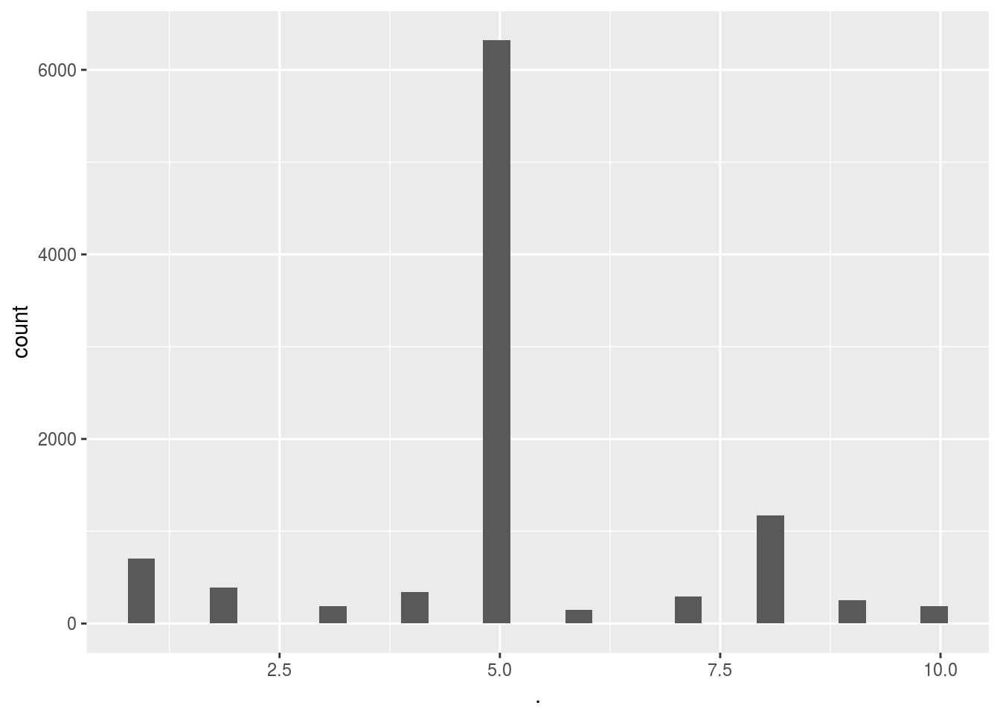
Here we can see the massive difference between simply selecting the add at random and using a reinforced learning algorithm. Clearly the algorithm very quickly converged to the 5th add out of the 10 adds. This means that on average the people in this test group clearly preffered ad 5 over the other adds. This is further supported by the fact that the UCB method gave us almost twice as many hits.
Of course, to reiterate, we could’ve come to the same conclusion using an A-B test and then simply used add 5 only. But using this method we can now safely decide on using add 5 whilst also having optimized the return during the trial phase. This is even more handy when we have many new users that all need to be tested (since this can be unsupervised and successive A-B tests would be too expensive on time/resources).
Part 6 - Parameter Grid Search, Cross-validation and Boosting
Load data:
social_network_ads_data <-
data.table::fread("../../static/data/intro_ml/Part_10_Boosting/Model_Selection/Social_Network_Ads.csv")
social_network_ads_data %>% head## User ID Gender Age EstimatedSalary Purchased
## 1: 15624510 Male 19 19000 0
## 2: 15810944 Male 35 20000 0
## 3: 15668575 Female 26 43000 0
## 4: 15603246 Female 27 57000 0
## 5: 15804002 Male 19 76000 0
## 6: 15728773 Male 27 58000 0Cross validation
The purpose of crossvalidation is to see the average performance of the model accross different folds of the data.
Intuition
Cross-validation is essential when the practitioner believes that the modelling algorithms being employed is at risk of overfitting the data. In these cases cross-validation will split the data into different folds. By holding each fold out as the testing set the model can now test the out-of-sample accuracy looping through each fold while still leveraging all the rest of the data and then averaging out the model performance for these non-independent folds.
In practise it would be better to run multiple independant experiments, but this would be time consuming and we dont have time or money to run multiple experiments.
How to
This can be interpreted via the confusion matrix. A perfect accuracy score would yield a confusion matrix where all entries are on the diagonal (i.e. if it was predicted a x_hat it was actualy x).
The confusion matrix can be derived manually by using the table function. When used on a single vector the table function behaves like a group by count(*). When used on two vectors it will count the overlaps bewteen unique items in both sets.
library(caret)
library(e1071)
# a bottom up approach
folds = createFolds(iris, k = 10)
cv = lapply(folds, function(x){
training_fold = iris[-x,]
test_fold = iris[x,]
classifier = svm(formula = Species ~ .,
data = training_fold,
type = 'C-classification',
kernel = 'radial'
)
y_pred = predict(classifier,newdata = test_fold[,-5])
outp = table(y_pred,test_fold$Species)
# confusionMatrix(classifier)
})This kindof bottom up approach illustrates how one might consider doing this. BUT this is arduous at best so let’s use more advanced methods:
# a more correct approach using built methods
classifier = svm(formula = Species ~ .,
data = iris,
type = 'C-classification',
kernel = 'radial',
cross=10
)
y_pred = predict(classifier,newdata = iris[,-5])
outp = table(y_pred,iris$Species)
outp##
## y_pred setosa versicolor virginica
## setosa 50 0 0
## versicolor 0 48 2
## virginica 0 2 48The svm function has a built in cross validation option, that great! But I want a workflow where I can use CV with any model? That’s why we use caret:
# A much better approach yet using the caret workbench
cvCtrl = caret::trainControl(method = "cv",
number = 10,
classProbs = TRUE
)
caret_svm_model <-
caret::train(Species~.,
data = iris,
method = "svmLinear3",
trControl = cvCtrl
)## Warning in train.default(x, y, weights = w, ...): Class probabilities were
## requested for a model that does not implement themcaret_svm_model %>% plot
varImp(caret_svm_model) %>% plot
caret_svm_model$results## cost Loss Accuracy Kappa AccuracySD KappaSD
## 1 0.25 L1 0.9600000 0.94 0.04661373 0.06992059
## 2 0.25 L2 0.9000000 0.85 0.06478835 0.09718253
## 3 0.50 L1 0.9600000 0.94 0.04661373 0.06992059
## 4 0.50 L2 0.9466667 0.92 0.06126244 0.09189366
## 5 1.00 L1 0.9533333 0.93 0.04499657 0.06749486
## 6 1.00 L2 0.9400000 0.91 0.05837300 0.08755950confusionMatrix(caret_svm_model)## Cross-Validated (10 fold) Confusion Matrix
##
## (entries are percentual average cell counts across resamples)
##
## Reference
## Prediction setosa versicolor virginica
## setosa 33.3 0.0 0.0
## versicolor 0.0 30.7 1.3
## virginica 0.0 2.7 32.0
##
## Accuracy (average) : 0.96Using the caret work bench we can leverage many powerfull functions and a more robust backend. Thus we get variable importance, properly executed cross-validation in the presence of other pre-processing operations and performance options such as parrallel computing.
Grid Search and Parameter Tuning
In machine learning applications there are 2 types of parameters:
- Learned parameters that the machine learning algorithm will solve intuitively (e.g. coefficients in a regression model)
- Hyper parameters that are chosen by the ML practitioner such as learning rate, tree size, test-train split etc.
One can imporve the performance of a model by finding the optimal combination of hyper-parameters by scanning through the parameter space. Generally speaking there are methods designed to improve the efficiency of finding these optima such as stochastic gradient decent. These and more advanced methods are especially employed in deep-learning models.
As a basic starting point we can do a simple grid search to scan the hyper-parameter space. The idea here is to take every possible permutation of the parameters that can be used and running the model for each parameter in question until the optimal parameters are found for a scoring metric such as accuracy.
Let’s repeat the classification using svm but now we try to find the optimal hyper-parameters
library(caret)
grid <- expand.grid(cost=seq(0.1,0.9,length.out = 10), Loss=seq(0.1,1,length.out = 10))
cvCtrl = caret::trainControl(method = "cv",
number = 10,
savePredictions = T)
caret_svm_model <-
caret::train(data = iris, Species~.,
method = "svmLinear3",
trControl = cvCtrl,
tuneGrid=grid
)
caret_svm_model %>% plot()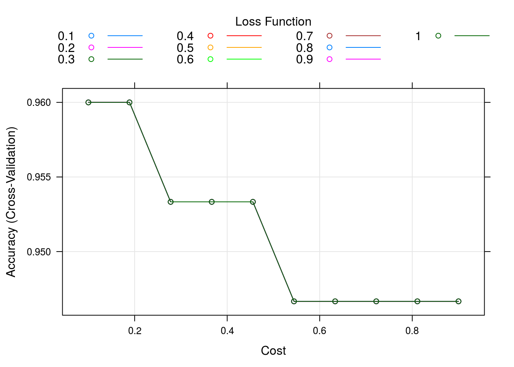
varImp(caret_svm_model) %>% plot
OK, lets see how all these variables were tested and the results (large table, all premutations)
caret_svm_model$results## cost Loss Accuracy Kappa AccuracySD KappaSD
## 1 0.1000000 0.1 0.9600000 0.94 0.05621827 0.08432740
## 2 0.1000000 0.2 0.9600000 0.94 0.05621827 0.08432740
## 3 0.1000000 0.3 0.9600000 0.94 0.05621827 0.08432740
## 4 0.1000000 0.4 0.9600000 0.94 0.05621827 0.08432740
## 5 0.1000000 0.5 0.9600000 0.94 0.05621827 0.08432740
## 6 0.1000000 0.6 0.9600000 0.94 0.05621827 0.08432740
## 7 0.1000000 0.7 0.9600000 0.94 0.05621827 0.08432740
## 8 0.1000000 0.8 0.9600000 0.94 0.05621827 0.08432740
## 9 0.1000000 0.9 0.9600000 0.94 0.05621827 0.08432740
## 10 0.1000000 1.0 0.9600000 0.94 0.05621827 0.08432740
## 11 0.1888889 0.1 0.9600000 0.94 0.05621827 0.08432740
## 12 0.1888889 0.2 0.9600000 0.94 0.05621827 0.08432740
## 13 0.1888889 0.3 0.9600000 0.94 0.05621827 0.08432740
## 14 0.1888889 0.4 0.9600000 0.94 0.05621827 0.08432740
## 15 0.1888889 0.5 0.9600000 0.94 0.05621827 0.08432740
## 16 0.1888889 0.6 0.9600000 0.94 0.05621827 0.08432740
## 17 0.1888889 0.7 0.9600000 0.94 0.05621827 0.08432740
## 18 0.1888889 0.8 0.9600000 0.94 0.05621827 0.08432740
## 19 0.1888889 0.9 0.9600000 0.94 0.05621827 0.08432740
## 20 0.1888889 1.0 0.9600000 0.94 0.05621827 0.08432740
## 21 0.2777778 0.1 0.9533333 0.93 0.06324555 0.09486833
## 22 0.2777778 0.2 0.9533333 0.93 0.06324555 0.09486833
## 23 0.2777778 0.3 0.9533333 0.93 0.06324555 0.09486833
## 24 0.2777778 0.4 0.9533333 0.93 0.06324555 0.09486833
## 25 0.2777778 0.5 0.9533333 0.93 0.06324555 0.09486833
## 26 0.2777778 0.6 0.9533333 0.93 0.06324555 0.09486833
## 27 0.2777778 0.7 0.9533333 0.93 0.06324555 0.09486833
## 28 0.2777778 0.8 0.9533333 0.93 0.06324555 0.09486833
## 29 0.2777778 0.9 0.9533333 0.93 0.06324555 0.09486833
## 30 0.2777778 1.0 0.9533333 0.93 0.06324555 0.09486833
## 31 0.3666667 0.1 0.9533333 0.93 0.05488484 0.08232726
## 32 0.3666667 0.2 0.9533333 0.93 0.05488484 0.08232726
## 33 0.3666667 0.3 0.9533333 0.93 0.05488484 0.08232726
## 34 0.3666667 0.4 0.9533333 0.93 0.05488484 0.08232726
## 35 0.3666667 0.5 0.9533333 0.93 0.05488484 0.08232726
## 36 0.3666667 0.6 0.9533333 0.93 0.05488484 0.08232726
## 37 0.3666667 0.7 0.9533333 0.93 0.05488484 0.08232726
## 38 0.3666667 0.8 0.9533333 0.93 0.05488484 0.08232726
## 39 0.3666667 0.9 0.9533333 0.93 0.05488484 0.08232726
## 40 0.3666667 1.0 0.9533333 0.93 0.05488484 0.08232726
## 41 0.4555556 0.1 0.9533333 0.93 0.05488484 0.08232726
## 42 0.4555556 0.2 0.9533333 0.93 0.05488484 0.08232726
## 43 0.4555556 0.3 0.9533333 0.93 0.05488484 0.08232726
## 44 0.4555556 0.4 0.9533333 0.93 0.05488484 0.08232726
## 45 0.4555556 0.5 0.9533333 0.93 0.05488484 0.08232726
## 46 0.4555556 0.6 0.9533333 0.93 0.05488484 0.08232726
## 47 0.4555556 0.7 0.9533333 0.93 0.05488484 0.08232726
## 48 0.4555556 0.8 0.9533333 0.93 0.05488484 0.08232726
## 49 0.4555556 0.9 0.9533333 0.93 0.05488484 0.08232726
## 50 0.4555556 1.0 0.9533333 0.93 0.05488484 0.08232726
## 51 0.5444444 0.1 0.9466667 0.92 0.06126244 0.09189366
## 52 0.5444444 0.2 0.9466667 0.92 0.06126244 0.09189366
## 53 0.5444444 0.3 0.9466667 0.92 0.06126244 0.09189366
## 54 0.5444444 0.4 0.9466667 0.92 0.06126244 0.09189366
## 55 0.5444444 0.5 0.9466667 0.92 0.06126244 0.09189366
## 56 0.5444444 0.6 0.9466667 0.92 0.06126244 0.09189366
## 57 0.5444444 0.7 0.9466667 0.92 0.06126244 0.09189366
## 58 0.5444444 0.8 0.9466667 0.92 0.06126244 0.09189366
## 59 0.5444444 0.9 0.9466667 0.92 0.06126244 0.09189366
## 60 0.5444444 1.0 0.9466667 0.92 0.06126244 0.09189366
## 61 0.6333333 0.1 0.9466667 0.92 0.06126244 0.09189366
## 62 0.6333333 0.2 0.9466667 0.92 0.06126244 0.09189366
## 63 0.6333333 0.3 0.9466667 0.92 0.06126244 0.09189366
## 64 0.6333333 0.4 0.9466667 0.92 0.06126244 0.09189366
## 65 0.6333333 0.5 0.9466667 0.92 0.06126244 0.09189366
## 66 0.6333333 0.6 0.9466667 0.92 0.06126244 0.09189366
## 67 0.6333333 0.7 0.9466667 0.92 0.06126244 0.09189366
## 68 0.6333333 0.8 0.9466667 0.92 0.06126244 0.09189366
## 69 0.6333333 0.9 0.9466667 0.92 0.06126244 0.09189366
## 70 0.6333333 1.0 0.9466667 0.92 0.06126244 0.09189366
## 71 0.7222222 0.1 0.9466667 0.92 0.06126244 0.09189366
## 72 0.7222222 0.2 0.9466667 0.92 0.06126244 0.09189366
## 73 0.7222222 0.3 0.9466667 0.92 0.06126244 0.09189366
## 74 0.7222222 0.4 0.9466667 0.92 0.06126244 0.09189366
## 75 0.7222222 0.5 0.9466667 0.92 0.06126244 0.09189366
## 76 0.7222222 0.6 0.9466667 0.92 0.06126244 0.09189366
## 77 0.7222222 0.7 0.9466667 0.92 0.06126244 0.09189366
## 78 0.7222222 0.8 0.9466667 0.92 0.06126244 0.09189366
## 79 0.7222222 0.9 0.9466667 0.92 0.06126244 0.09189366
## 80 0.7222222 1.0 0.9466667 0.92 0.06126244 0.09189366
## 81 0.8111111 0.1 0.9466667 0.92 0.06126244 0.09189366
## 82 0.8111111 0.2 0.9466667 0.92 0.06126244 0.09189366
## 83 0.8111111 0.3 0.9466667 0.92 0.06126244 0.09189366
## 84 0.8111111 0.4 0.9466667 0.92 0.06126244 0.09189366
## 85 0.8111111 0.5 0.9466667 0.92 0.06126244 0.09189366
## 86 0.8111111 0.6 0.9466667 0.92 0.06126244 0.09189366
## 87 0.8111111 0.7 0.9466667 0.92 0.06126244 0.09189366
## 88 0.8111111 0.8 0.9466667 0.92 0.06126244 0.09189366
## 89 0.8111111 0.9 0.9466667 0.92 0.06126244 0.09189366
## 90 0.8111111 1.0 0.9466667 0.92 0.06126244 0.09189366
## 91 0.9000000 0.1 0.9466667 0.92 0.06126244 0.09189366
## 92 0.9000000 0.2 0.9466667 0.92 0.06126244 0.09189366
## 93 0.9000000 0.3 0.9466667 0.92 0.06126244 0.09189366
## 94 0.9000000 0.4 0.9466667 0.92 0.06126244 0.09189366
## 95 0.9000000 0.5 0.9466667 0.92 0.06126244 0.09189366
## 96 0.9000000 0.6 0.9466667 0.92 0.06126244 0.09189366
## 97 0.9000000 0.7 0.9466667 0.92 0.06126244 0.09189366
## 98 0.9000000 0.8 0.9466667 0.92 0.06126244 0.09189366
## 99 0.9000000 0.9 0.9466667 0.92 0.06126244 0.09189366
## 100 0.9000000 1.0 0.9466667 0.92 0.06126244 0.09189366confusionMatrix(caret_svm_model)## Cross-Validated (10 fold) Confusion Matrix
##
## (entries are percentual average cell counts across resamples)
##
## Reference
## Prediction setosa versicolor virginica
## setosa 33.3 0.0 0.0
## versicolor 0.0 30.0 0.7
## virginica 0.0 3.3 32.7
##
## Accuracy (average) : 0.96XGBoost
XGBoost is an algorithm that has recently been dominating the machine learning literature where tabular or structured data is involved.
It uses an implementation of decision trees using gradien boosting designed for speed and performance.
In general the XGBoost algorithm is a more strict and optimized version of the GBM model in R.
data_XGB =
# data.table::fread("Part_10_Boosting/XGBoost/Churn_Modelling.csv")
readr::read_csv("../../static/data/intro_ml/Part_10_Boosting/XGBoost/Churn_Modelling.csv")## Parsed with column specification:
## cols(
## RowNumber = col_integer(),
## CustomerId = col_integer(),
## Surname = col_character(),
## CreditScore = col_integer(),
## Geography = col_character(),
## Gender = col_character(),
## Age = col_integer(),
## Tenure = col_integer(),
## Balance = col_double(),
## NumOfProducts = col_integer(),
## HasCrCard = col_integer(),
## IsActiveMember = col_integer(),
## EstimatedSalary = col_double(),
## Exited = col_integer()
## )data_XGB %>% head## # A tibble: 6 x 14
## RowNumber CustomerId Surname CreditScore Geography Gender Age Tenure
## <int> <int> <chr> <int> <chr> <chr> <int> <int>
## 1 1 15634602 Hargrave 619 France Female 42 2
## 2 2 15647311 Hill 608 Spain Female 41 1
## 3 3 15619304 Onio 502 France Female 42 8
## 4 4 15701354 Boni 699 France Female 39 1
## 5 5 15737888 Mitchell 850 Spain Female 43 2
## 6 6 15574012 Chu 645 Spain Male 44 8
## # ... with 6 more variables: Balance <dbl>, NumOfProducts <int>,
## # HasCrCard <int>, IsActiveMember <int>, EstimatedSalary <dbl>,
## # Exited <int>Pre-process the data
data_XGB = data_XGB[,4:14]
#encode categorical variables as factors
data_XGB <-
data_XGB %>%
mutate(Geography = factor(Geography,
levels = c('France','Spain','Germany'),
labels = c(1,2,3)) %>% as.numeric(),
Gender = factor(Gender,
levels = c('Female','Male'),
labels = c(1,2)) %>% as.numeric()
)
library(caTools)
set.seed(123)
split = sample.split(data_XGB$Exited, SplitRatio = 0.8)
train = data_XGB[split,]
test = data_XGB[!split,]no feature scaling required
Train model:
Manually calculate some accuracy statistics since this library does not seem to have relevant summary functions
y_pred = predict(classifier_XGB, newdata = as.matrix(test[,-11])) >=0.5
y_actual = test[,11] %>% flatten_dbl()
cm = table(y_pred,y_actual)
cm## y_actual
## y_pred 0 1
## FALSE 1524 210
## TRUE 69 197accuracy = (cm[1,1] + cm[2,2]) / (cm[1,1] + cm[2,2] + cm[1,2] + cm[2,1]) #sum of diagonal over sum of all hits
# in other words we could've used:
accuracy_ = sum(diag(cm)) / (test %>% nrow)
#since this can be used for any arbitrary number of categories
accuracy_## [1] 0.8605So interestingly; if I increase the parameter nrounds I can get the R-squared estimate down by a lot, especially since the algorithm is so fast. However, this actually decreases the percieved accuracy of the model. That’s interesting, also why does the model report R-squared anyway, if it is not a relevant measure of accuracy?
Let’s apply our grid_search approach to find a better parameter value:
Manual grid-search approach (1 parameter)
For multiple parameters use expand.grid together with pmap (exponentially taxing)
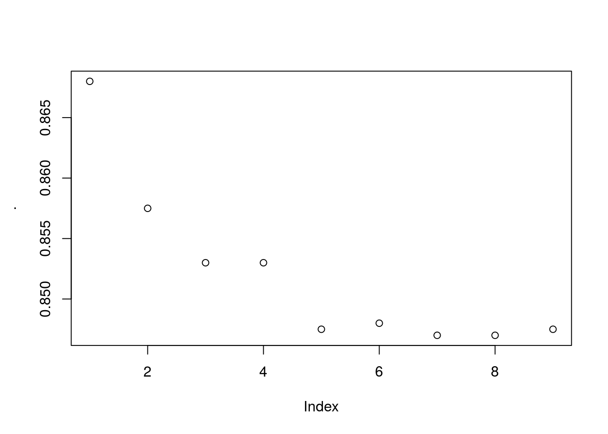
Fascinating, the actual accuracy goes down the more iterations you use… I expected some sort of cut-off where overfitting happens but its entirely a downward trend. This casts a lot of doubt on the actual validity of the model being used. Not because it’s bad but because it may be being used incorrectly by the people in this course. Alas I don’t know enough about this model to really say whats wrong here, but its suspicious.
The model does however converge on about 1300 iterations with accuracy of roughly ~0.85 and RMSE of 0.004094. Interestingly the max accuracy ~0.87 has model specified RMSE of ~0.5 which could indicate a few outliers skewing the model accuracy when optimized using RMSE.
If this is true the model using gradient descent performs extremely well after only a single iteration. That implies that the default starting parameters for the tree based search happens to be pretty good or the gradient descent arrived at a good solution of hyper-parameters after only a single iteration.